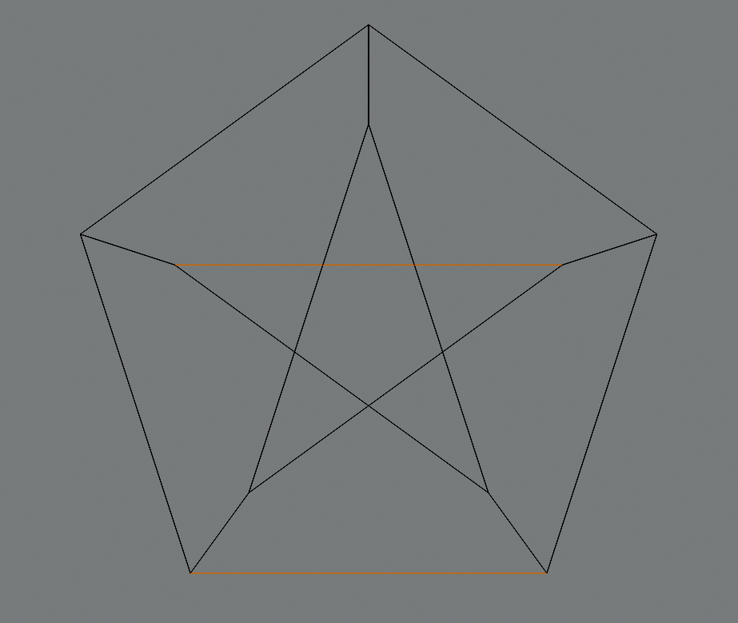

solution
Grafy planarne
Przedstaw grafy \(K_{3,3}\) i \(K_5\) jako grafy na płaszczyźnie z minimalną liczbą przecięć.
solution
Zaopatrz się w brystol, wytnij na podstawie następującego rysunku [rysunek] szablony brył platońskich i sklej je.


Pokaż, że graf Petersena nie jest planarny. Wskazówka: Usuń dwie ”poziome” krawędzie i skorzystaj z twierdzenia Kuratowskiego.
Usuwamy dwie „poziome” krawędzie według wskazówki: 
Następnie kondensujemy zaznaczone krawędzie: 
Wówczas otrzymujemy graf \(K_{3,3}\) który nie jest planarny: 
Możemy dodatkowo przesunąć górny wierzchołek na dół, żeby ujrzeć bardziej klasyczną wersję tego grafu. 
Narysuj na płaszczyźnie graf Petersena tak aby na rysunku były tylko dwa przecięcia krawędzi.

petersen's graph
Pokaż, że każde drzewo jest planarne.
Wskazówka: To jest proste ćwiczenie na indukcję matematyczną; indukcję zrób po liczbie wierzchołków.
Niech zadane drzewo będzie \(T\).
Stworzymy graf izomorficzny z drzewem \(T\). Bierzemy wierzchołek \(r \in V(T)\), który traktujemy jako korzeń drzewa. Wszystkie wierzchołki należące do sąsiedztwa \(r\) dorysowujemy na nowym grafie w takiej samej odległości jednak każdy skierowany w inną stronę i łączymy te wierzchołki krawędziami z \(r\). Teraz dla każdego z tych wierzchołków sąsiednich do \(r\) powtarzamy tę procedurę aż nie skończą się nam wierzchołki.
Kształt powstałego grafu może przypominać gwiazdę, bo rysując kolejne krawędzie oddalamy się od \(r\) i nie przecinamy żadnych innych krawędzi podczas rysowania nowych – mamy taką możliwość, ponieważ żyjemy w przestrzeni \(\reals\times\reals\), która daje nam nieskończoną precyzję i nieskończone możliwości kładzenia kolejnych krawędzi i wierzchołków :).